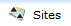
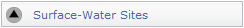
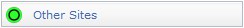
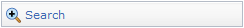
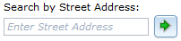
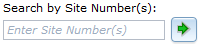
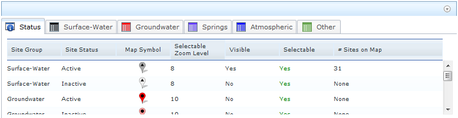
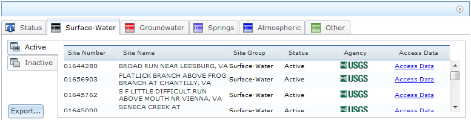
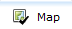
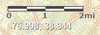

National Water Information System: Mapper
How To Use the Mapper
This interface provides a map view of the locations of sites with USGS water data. The interface can be used most efficiently by following a few basic rules:- Center and zoom to area of interest.
- Select site types using checkboxes.
- Sites are clickable only when zoomed in enough for accurate selection.
- Specific areas such as USA states and territories can be selected using the drop-down list.
- Named places and addresses can be selected using geographic searching.
Selecting Sites to Include
|
   |
The National Water Information System (NWIS) provides access to data at over 1.5 million sites. There are 56 possible site types used in the NWIS data base, including 14 primary types and 42 secondary types. To simplify mapping of the site locations for most practical applications, the site types are displayed in 5 groups that include the following primary and secondary types. The full list of site types can be found here. | |||||
|
Sites may be active or inactive. A site is considered active if: (1) it has collected time-series (automated) data within the last 183 days (6 months), or (2) it has collected discrete (manually collected) data within 397 days (13 months). If it does not meet these criteria, it is considered inactive. Some exceptions apply. For example, a site may also be shown as active if it is part of an ongoing occasional data-collection program. If a site is flagged by a USGS water science center as discontinued, it will show as inactive regardless of how recent data may be. A USGS science center can also flag a new site as active even if it has not collected any data. This control allows a user to select a broad category of sites to view, and is useful for simplifying a view in areas with a high density of sites. The default selection is Active sites. | |||||
|
At any given site, one or more types of data may be available. Where data collection is continuous, data may be available in real-time, as individual observations, or as daily summaries. Some sites may have data from water-quality samples. At stream sites, data may be available for flood peaks. For surface-water and groundwater sites, data may be available for individual field measurements. For many active or recently active sites, there may also be an online annual summary report. The default selection is any data. These selections are only active when sites are clickable. |
Selecting an Area or Place to View
|
 |
The Mapper provides several alternatives to selecting an area to view. The Navigation Controls explained below can be used to select areas directly on the map. The default selection is the lower-48 USA states. The Search tab on the left panel provides several Map Search options for views based on a named location or major watershed. |
|
Search by Place |
This option selects an area using a street address or place name, and is useful for viewing close to a specific point of interest. The preferred method can be specified using the drop-down menu. Searching by place name (e.g. Fargo, ND) is most effective when a specific address is not available, and will create a viewing extent that brackets the named place. Searching by street address will usually result is a closer view, and will create a view that is centered on the address. Either search will also accept just a Zip Code. |
|
Search by Site Number(s) |
This option selects an area using one or more site numbers. If one number is entered the view will be centered on that site. If more than one number is entered, separated by commas, the view will use the spatial range of the sites to determine the view. |
|
Search by State or Territory |
This option selects a particular U.S. State or territory by name from a list, and is useful for quickly viewing a larger area. The map view will be centered on the area and include at least all area inside its official boundaries. |
|
Search by Watershed Regions |
This option selects a major watershed region by name from a list, and is useful for quickly viewing a larger area. The map view will be centered on the area and include at least all area inside its official boundaries. |
Displaying Sites
Explanation below is for zoom levels in which sites are not
clickable.
|
Explanation below is for zoom levels in which sites are
clickable.
|
The Mapper displays clickable sites only at smaller scales in the map view (zoom level 10 or greater for groundwater sites and zoom level 8 or greater for all other site types). This approach provides a reasonably fast drawing time. The display of each of the site types and corresponding available data types can be turned on and off using the checkboxes and radio buttons. Multiple site types can be displayed concurrently, but only one data type per site type group can be displayed at a time. Shapes and colors are also used to indicate the type of data collected at sites. Black triangles and gray colors represent surface-water sites, black dots and red colors represent groundwater sites, black dots with a tail and purple colors represent springs, black diamonds and blue colors represent atmospheric sites, and open circles and green colors represent all other site types. At some locations there are multiple sites. These are indicated by a Multiple Sites mapping symbol. The full explanation of symbols for a site type will only appear when that site type tab is selected. |
|||||||||||||||||||||||||||||||||||||||||||||||||||||
 Active site
Active site Inactive site
Inactive site Active site
Active site Inactive site
Inactive site Active site
Active site Inactive site
Inactive site Active site
Active site Inactive site
Inactive site Active site
Active site Inactive site
Inactive site
Selecting a Site and Getting Data
 |
Controls in this section only apply at zoom levels where sites are clickable. Selecting (clicking) the site will identify it by site number and name. A link is also provided to access any available data from the National Water Information System. Multiple links are provided in cases where there are multiple sites at one location. |
Viewing a List of Displayed Sites
A list of all sites that are shown in the map view is available in the the information panel below the map. The panel can be viewed by clicking on or made hidden from view by clicking on  . The list can be exported in several formats, and includes links to access any available data from the National Water Information System.
. The list can be exported in several formats, and includes links to access any available data from the National Water Information System.
The information panel has tabs that provide two principal functions. The first function is provided by the Status tab (example shown below) lists the five site type groups by active and inactive status.

For each group and active/inactive status, the following information is listed with respect to the current map view:
- Map Symbol - unique symbol to show location of site, site group, and active/inactive status
- Selectable Zoom Level - minimum zoom level at which clicking on a map symbol will produce an information popup for that site
- Visible - Is the site group and status selected for display using the check box under the Sites tab? Yes/No.
- Selectable - Will clicking on a map symbol produce and information popup for that site? Yes/No.
- # Sites on Map - number of sites in a category that are displayed on the current map view
Important: The information presented in the information panels can be sorted by clicking on the column heading. For example, to sort the information in alphabetical order by Site Name, click on that column heading. If you click on the heading again, the column will be sorted in reverse order.
The second function lists the sites. A tab is provided for each of the five site group types, with sub-tabs for active and inactive status. An example for the Surface Water site type group and active status is shown below.

For each site shown on the current map view, the following information is listed:
- Site Number - Unique site number to identify the site in NWIS
- Site Name - Unique site name to identify the site in NWIS
- Site Group - Site type group (Surface Water, Groundwater, Spring, Atmospheric, Other)
- Status - Site is Active or Inactive
- Agency - Abbreviation of agency responsible for data at the site
- Access Data - Link to available data for the site in NWIS
- Export - Link to export the list of sites in various formats
Selecting (clicking) any row in the Site Group tabs will highlight that site on the map.
Exporting Site List

 |
Site information can be exported in the following formats listed below. The Table of Sites will be displayed directly in the web broswer, and all other formats are exported as a zipped data package that contains three files: (1) Readme.txt, which describes the contents of the data package, (2) Metadata.txt, which provides the specifications for the retrieval, such as creation date, time, bounding coordinates, and other information about the map view, (3) NWISMapperExport.nnn, which is the actual list of sites in the requested export format, where nnn is the file type suffix listed below.
|
Map Layers - Background Views

Map Layers
|
Several additional layers of information are available to complement the display of sites using the Map Layers selection under the Map Layers tab. Note that map layer views are appropriate to and will vary with map scale. |
|||||||
Base Maps
|
The default background view is an ESRI Streets map. Several background map types are available and can be selected using the Base Maps selection under the Map Tools tab. More information on each base map is available at ESRI Map Services, or by selecting the link on the left to particular base maps. All uses of ESRI base maps are subject to their Terms of Use. Note that background views are appropriate to and will vary with map scale. Not all views are available at all scales, particularly when zoomed in very close to a location. |
 USGS National Hydrography
USGS National Hydrography 
 Water Scence Center
Water Scence Center  Water Field Office
Water Field Office Navigating in ESRI Maps
You can navigate (move your view) in two dimensions in any ESRI Map. To pan (move the map), do one of the following:- Click and hold the mouse buttons to drag the map
- Press the up arrow on your keyboard to move north
- Press the down arrow on your keyboard to move south
- Press the right arrow on your keyboard to move east
- Press the left arrow on your keyboard to move west
Using the Navigation Controls
 |
On-screen zoom controls are shown on the left. Zoom controls include:
Additional controls are described below and are provided to set the function of the cursor and to select map views.
|


Map Tools
Scale Bar
The scale bar shows a graphic map scale for estimating distances. The scale bar is shown using line weights and colors that can be read easily on most base maps, including the default. In some cases, the scale bar may be easier to distinguish on an alternative base map, particularly one with a lighter color.Longitude and Latitude Coordinates
The longitude and latitude of the cursor position are shown in decimal degrees. Note that when obtaining the coordinates of a data site the map symbol, including its shadow, is centered over the exact coordinates of the data site -- at zoom levels of 15 or more, there is no discernable difference in coordinate values at any point on the map symbol. The coordinates are shown using a font weight and color that can be read easily on most base maps, including the default. In some cases, the coordinates may be easier to distinguish on an alternative base map, particularly one with a darker color.
Using the Overview Map
 |
The overview map (shown left here)
appears in the bottom right corner of the map. It helps to orient
you by showing the location of current map view in the context
of a larger geographical area. The area currently displayed
in the map is show as a purple box in the overview map. At any
time, click As you pan or zoom in the map, the overview map view changes accordingly. You can change the existing view in the map by doing one of the following:
|
Parameters in the Web Page Address (URL)
Certain parameters can be included in the web page address (URL) to create opening views that go directly to an area of interest. These include U.S. state or territory codes, center coordinates, and zoom level. To include a parameter in the URL, append the following to the URL after a "?" for the first parameter, and an "&" for additional parameters. For example, to create a view centered on the lower 48 states, the full URL would be:https://maps.waterdata.usgs.gov/mapper/index.html?MapCenterX=-96.0&MapCenterY=36.0&MapZoom=4.
- State=nn sets the view centered on a particular U.S. state or territory, where nn is any official postal code. The value is not case sensitive. There is no default, but if blank the default values of MapCenterX, MapCenterY, and MapZoom will be used. Any allowed value of state or territory code will override any other parameters.
- MapCenterX=nn sets the horizontal center coordinate of the map view, where nn is any value of decimal longitude (-180.0 to 180.0). Default is -96.0.
- MapCenterY=nn sets the vertical center coordinate of the map view, where nn is any value of decimal latitude (-90.0 to 90.0). Default is 36.0.
- MapZoom=nn sets the scale ot the map view, where nn is any valid zoom level (0-19). Zoom level can vary from 1 to the maximum zoom that a particular map type can support (see Background View; for example, Terrain map maximum zoom level is 15). Default is 4.
https://maps.waterdata.usgs.gov/mapper/index.html?SiteGroups=gw,act.
where:
- sitegroups=nn,nnn sets the view to be the general site type and activity status that is specified, where nn is any valid group code: sw (surface water), gw (groundwater), sp (spring), at (atmosphere), ot (other); and nnn is any valid status code: act (active), ina (inactive). The values are not case sensitive. The default if the parameters are not used or if no values are specified is surface water (sw) and active (act). Multiple pairs of group and status can be specified by separating pairs with a comma, such as sw,act,sw,ina
https://maps.waterdata.usgs.gov/mapper/index.html?OverviewMap=no.
where:
- OverviewMap=nn sets initial view of the Overview Map to be off or on, where nn is "no" or "yes", respectively. The parameter is assumed as yes if it is not specified.